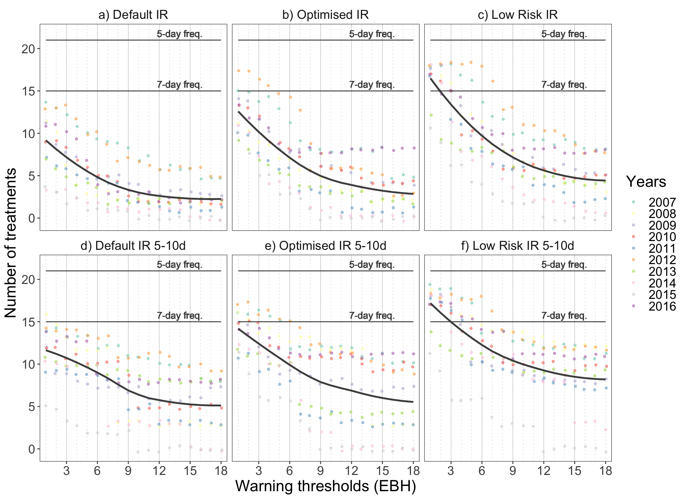
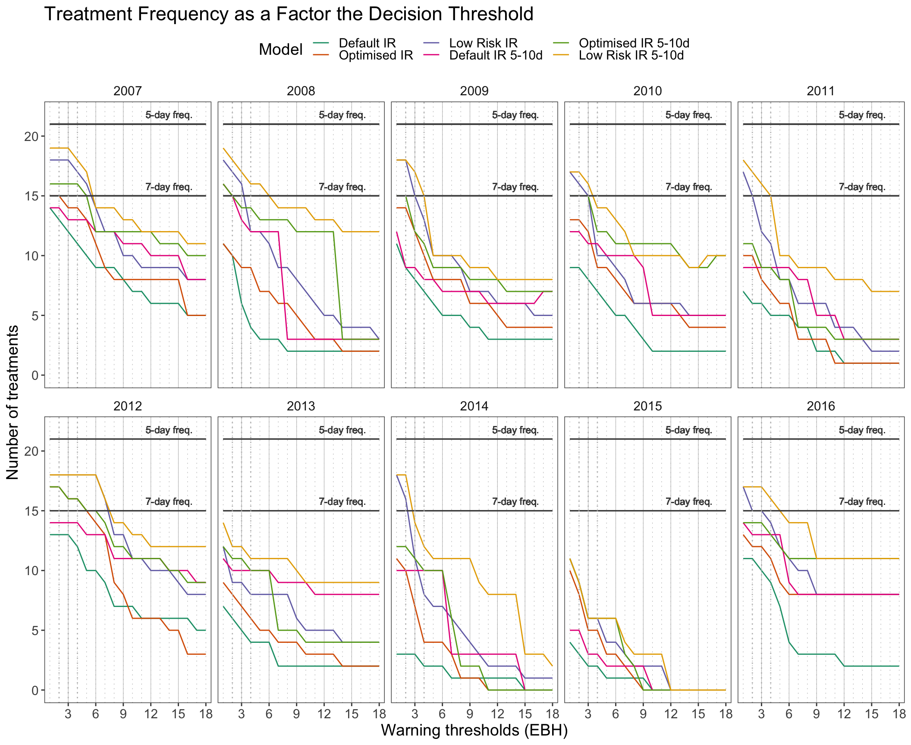

Packages needed for the analysis are loaded. If the libraries do not exist locally, they will be downloaded.
list.of.packages <-
c(
"tidyverse",
"readxl",
"data.table",
"lubridate",
"knitr",
"padr",
"readr",
"devtools",
"pracma",
"remotes",
"parallel",
"pbapply",
"ggrepel",
"ggthemes",
"egg",
"rsm",
"GGally",
"R.utils",
"rcompanion",
"mgsub",
"here",
"stringr",
"pander"
)
new.packages <-
list.of.packages[!(list.of.packages %in% installed.packages()[, "Package"])]
#Download packages that are not already present
if (length(new.packages))
install.packages(new.packages)
if ("gt" %in% installed.packages() == FALSE)
remotes::install_github("rstudio/gt")
list.of.packages <- c(list.of.packages, "gt")
packages_load <-
lapply(list.of.packages, require, character.only = TRUE)
#Print warning if there is a problem with installing/loading some of packages
if (any(as.numeric(packages_load) == 0)) {
warning(paste("Package/s", paste(list.of.packages[packages_load != TRUE]), "not loaded!"))
} else {
print("All packages were successfully loaded.")
}## [1] "All packages were successfully loaded."rm(list.of.packages, new.packages, packages_load)The crop risk prediction model is useful only if it provides same level of protection as the standard practice, while reducing necessary costs and labor. It was evident that the Irish Rules with their default variable thresholds were to conservative and failed to prove as sustainable solution for the disease forecasting.
Two alternative model parametrisations are proposed and in this section we will implement a theoretical study to evaluate the usefulness with regard to their their potential to save fungicide applications. The performance is evaluated in two ways, as a reduction of: 1. Number of treatments: + With minimum window of 5 days between treatments + With minimum of 5 and maximum of 10 days between treatments 2. Dose reduction based on 7 day calendar treatment
Soil temperature data.
soildf<- read_csv(here::here("tmp", "agridata_375.csv"),col_types = cols(X1 = col_skip(), X10 = col_skip()),
skip = 7)
soildf$date = as.Date(soildf$date,format="%d-%b-%Y", tz = "UTC")
soildf <- tidyr::separate(soildf, "date", c("year_var", "month", "day"), sep = "-", remove = F )
soildf$doy <- yday(soildf$date)
soildf[,2:5] <- lapply(soildf[,2:5], as.numeric)We assume that the planting starts day after the daily average soil temperature becomes higher than 8°C for three consecutive days in the beginning of April. This is common practice in Ireland, recommended by Teagasc.
soildf <- soildf[with(soildf, month >= 4),]
dfls <- base::split(soildf, soildf$year_var)
dates_cut <-
lapply(dfls, function(x) {
criteria <- as.numeric(x$soil>8)
#cumulative sum days matching the criteria
criteria_sum <- stats::ave(criteria, cumsum(criteria == 0), FUN = cumsum)
pl_date <- x[match(3, criteria_sum)+1, "date"]
data.frame( "year" = unique(year(x$date)),
date = pl_date[1,1])
}
) %>% bind_rows() %>%
rename( "plant_date" = date)
rm(soildf, dfls)The data for 2007 is missing so we shall use the mean date from other years.
dates_cut$plant_doy <-yday(dates_cut$plant_date)
dates_cut <-
bind_rows(
list(
dates_cut,
data.frame(
year = 2007,
plant_date = as.Date(strptime(paste("2007", mean(dates_cut$plant_doy, na.rm = T )), format="%Y %j")),
plant_doy = mean(dates_cut$plant_doy)
)
)
)We will assume that the full emergence takes 3 and additional minimum of 2 weeks for full emergence and for the first plants to start meeting in the rows.
meet_in_rows <- 5*7
dates_cut$prot_start <- with(dates_cut, plant_doy + meet_in_rows)
dates_cut$prot_start <- paste(dates_cut$year, dates_cut$prot_start, sep = "-") %>% strptime(format="%Y-%j") %>% as.Date()For the purposes of this study we will assume that the growing season lasts 120 days. However, the pesticide protection lasts for at least another three weeks to allow the tuber growth.
duration_of_season <- 120 + 21
dates_cut$season_end <- with(dates_cut, plant_doy + duration_of_season)
dates_cut$season_end <- paste(dates_cut$year, dates_cut$season_end, sep = "-") %>% strptime(format="%Y-%j") %>% as.Date()
dates_cut %>% kable()| year | plant_date | plant_doy | prot_start | season_end |
|---|---|---|---|---|
| 2008 | 2008-04-04 | 95.00000 | 2008-05-09 | 2008-08-23 |
| 2009 | 2009-04-04 | 94.00000 | 2009-05-09 | 2009-08-23 |
| 2010 | 2010-04-08 | 98.00000 | 2010-05-13 | 2010-08-27 |
| 2011 | 2011-04-04 | 94.00000 | 2011-05-09 | 2011-08-23 |
| 2012 | 2012-04-04 | 95.00000 | 2012-05-09 | 2012-08-23 |
| 2013 | 2013-04-12 | 102.00000 | 2013-05-17 | 2013-08-31 |
| 2014 | 2014-04-04 | 94.00000 | 2014-05-09 | 2014-08-23 |
| 2015 | 2015-04-05 | 95.00000 | 2015-05-10 | 2015-08-24 |
| 2016 | 2016-04-07 | 98.00000 | 2016-05-12 | 2016-08-26 |
| 2007 | 2007-04-06 | 96.11111 | 2007-05-11 | 2007-08-25 |
Load the weather data with model outputs.
load(file = here::here("data", "op_2007_16", "OP_for_analysis.RData"))
years <- unique(OP$year_var)
df <- filter(OP, month>=2 & month <=9 );rm(OP)
df <-
df[, c("date",
"year_var",
"short_date",
"week_var",
"doy",
"rain",
"temp",
"rhum",
"90_10_12_rain_ebh",
"88_12_10_rainrh_ebh",
"88_10_10_rainrh_ebh")] #Keep only columns needed for faster code execution
df <- dplyr::rename(df,
ir = "90_10_12_rain_ebh",
ir_opt = "88_12_10_rainrh_ebh",
ir_low_risk = "88_10_10_rainrh_ebh"
)Calculate the number of calendar treatments, assuming they would start 5 weeks and end 141 days after the planting
(calendar_five <- round( c(duration_of_season-5*7)/5,0))## [1] 21(calendar_seven <- round( c(duration_of_season-5*7)/7,0))## [1] 15We are assuming that a fungicide treatment is activated every time the warning threshold is reached. Minimum period until the next treatment is 5 days. Cumulative sum of recommended treatments is calculated per season.
ControlFreqFun <-
function(y,
weather_data,
dates_cut,
min_prot_dur = NULL,
max_prot_dur = NULL) {
#Set the warning threshold and run the rest of the script
warning_threshold <- y
#Weather and model output data
fun_df <- weather_data
#Each warning would cause treatment that will keep the plants protected for a period of time
min_prot_dur <-
ifelse(is.null(min_prot_dur), 5, min_prot_dur)#If not defined default value is 5 days
max_prot_dur <-
ifelse(is.null(max_prot_dur), 10, max_prot_dur)#If not defined default value is 10 days
#A function to subset the data for the period of interest in each year
test.overlap = function(vals, start_date, end_date) {
rowSums(mapply(function(a, b)
between(vals, a, b),
start_date, end_date)) > 0
}
#Subset the of the data for the duration of 'protection' period for each year
trt_df <-
fun_df %>%
filter(test.overlap(short_date,
dates_cut$prot_start,
dates_cut$season_end + max_prot_dur #Additional days for risk estimation and timing of treatments
)
) %>%
dplyr::select(
ends_with("year_var"),
ends_with("week_var"),
ends_with("doy"),
starts_with("ir")
) %>%
group_by(year_var) %>%
#if there was an accumulation from previous day, it would triger a warning
#Check all of the first five rows because of possible break of 5 hours
mutate_at(., .vars = colnames(.[grep("ir", colnames(.))]),
funs(
ifelse(row_number() <= 5 & . >= warning_threshold,
warning_threshold, .)
)) %>%
#all five values all changed so we have to delete 4 of them and leave only 1
mutate_at(., .vars = colnames(.[grep("ir", colnames(.))]),
funs(ifelse(
row_number() <= 4 & . == warning_threshold, 0, .
))) %>%
# Change values coresponding to the warning threshold to 1 for calculating the sum
mutate_at(., .vars = colnames(.[grep("ir", colnames(.))]),
funs(ifelse(. == warning_threshold, 1, 0))) %>%
group_by(year_var, week_var, doy) %>%
summarise_at(., .vars = colnames(.[grep("ir", colnames(.))]), .funs = sum)
#####################################################################
#Calculate the number of treatments with with minimum protection duration of 5 days
TreatmentWindowOne <- function(model_output, min_prot_dur ,max_prot_dur ) {
# model_output <- trt_df_one[[1]]$ir
y <- model_output
for (i in seq_along( 1: c(length(y) - max_prot_dur))) {
#Following treatment will be implemented on day 5 if there is 1 in the next five days
if (y[i] == 1 & sum(y[c(i+1):c(i+min_prot_dur)])>0 ) {
y[i+min_prot_dur] <- 1
y[c(i+1):c(i+ c(min_prot_dur-1))] <- 0
}
}
#Add zeros for the duration of added period
y[c(length(y) - max_prot_dur) : length(y)] <- 0
y
}
#Apply function on yearly subsets
trt_df_one <-
split(trt_df, trt_df$year_var)
for (year in seq_along(trt_df_one)) {
x <- trt_df_one[[year]]
trt_df_one[[year]] <-
lapply(x[grep("ir", colnames(x))], function(x)
TreatmentWindowOne(x, min_prot_dur ,max_prot_dur)) %>%
bind_cols()
}
trt_df_one <- bind_rows(trt_df_one)
trt_df_one <- bind_cols(trt_df["year_var"],trt_df_one )
#####################################################################
#Calculate the number of treatments with 5-10 day sliding treatment interval
TreatmentWindow <- function(model_output, min_prot_dur ,max_prot_dur ) {
x <- model_output
#attach vector, 10 days of 0
y <- vector(mode = "numeric", length = length(x) )
# find the first treatment
y[which(x == 1)[1]] <- 1
for (i in seq_along( 1: c(length(y) - max_prot_dur))) {
#Following treatment will be implemented on day 5 if there is 1 in the next five days
if (y[i] == 1 & sum(x[c(i+1):c(i+5)])>0 ) {y[i+5] <- 1}
#Or on any following day with risk threshold reached
if (y[i] == 1 & sum(x[c(i+1):c(i+5)])==0 & x[i+6]==1 ) {y[i+6] <- 1}
if (y[i] == 1 & sum(x[c(i+1):c(i+6)])==0 & x[i+7]==1 ) {y[i+7] <- 1}
if (y[i] == 1 & sum(x[c(i+1):c(i+7)])==0 & x[i+8]==1 ) {y[i+8] <- 1}
if (y[i] == 1 & sum(x[c(i+1):c(i+8)])==0 & x[i+9]==1 ) {y[i+9] <- 1}
#If warning threshold was not reached at all or 10th day, then spray on 10th day
if (y[i] == 1 & sum(x[c(i+1):c(i+9)])==0 ) {y[i+10] <- 1}
#if there was no treatment
if(i== c(length(y) - max_prot_dur)) break
}
#Add zeros for the duration of added period
y[c(length(y) - max_prot_dur) : length(y)] <- 0
y
}
trt_df_window <-
split(trt_df, trt_df$year_var)
for (year in seq_along(trt_df_window)) {
x <- trt_df_window[[year]]
trt_df_window[[year]] <-
lapply(x[grep("ir", colnames(x))], function(x)
TreatmentWindow(x, min_prot_dur,max_prot_dur)) %>%
bind_cols() %>%
rename_all(., .funs = funs(paste0("w_", .)))
}
trt_df_window <- bind_rows(trt_df_window)
#Combine the data for both scenarios
trt_df <- bind_cols(trt_df_one, trt_df_window)
#Calculate number of treatmetns per year
sum_df <-
trt_df %>%
group_by(year_var) %>%
summarise_at(colnames(trt_df[, grep("ir", colnames(trt_df))]), .funs = sum)
sum_df$warning_thres <- warning_threshold
return(sum_df)
}Calculate the number of treatments for each warning threshold (EBH).
# this chunk not evaluated
#select max warning threshold
warning_thresholds <- 1:18
begin <- Sys.time()
#Detect the number of cores and set it to total minus 1, if there are multiple cores, to avoid overload
cores <- ifelse(detectCores() > 1, detectCores()-1, 1)
cl <- makeCluster(cores)
clusterExport(cl, c("df", "dates_cut", "ControlFreqFun"))
clusterEvalQ(cl, library("tidyverse", quietly = TRUE, verbose = FALSE))## [[1]]
## [1] "forcats" "stringr" "dplyr" "purrr" "readr"
## [6] "tidyr" "tibble" "ggplot2" "tidyverse" "stats"
## [11] "graphics" "grDevices" "utils" "datasets" "methods"
## [16] "base"
##
## [[2]]
## [1] "forcats" "stringr" "dplyr" "purrr" "readr"
## [6] "tidyr" "tibble" "ggplot2" "tidyverse" "stats"
## [11] "graphics" "grDevices" "utils" "datasets" "methods"
## [16] "base"
##
## [[3]]
## [1] "forcats" "stringr" "dplyr" "purrr" "readr"
## [6] "tidyr" "tibble" "ggplot2" "tidyverse" "stats"
## [11] "graphics" "grDevices" "utils" "datasets" "methods"
## [16] "base" control_eval <- pbapply::pblapply(warning_thresholds, function(x)
{
xx <-
ControlFreqFun(x,
df,
dates_cut,
min_prot_dur = 5,
max_prot_dur = 10)
return(xx)
},
cl = cl
)
begin- Sys.time() #check the duration of the pcontrol_evaless in the console## Time difference of -5.327751 secsstopCluster(cl)Melt the data frame.
control_eval_long <-
control_eval %>%
bind_rows() %>%
reshape2::melt(
id.vars = c("year_var", "warning_thres"),
variable.name = "programme",
value.name = "no_of_treatments"
)
control_eval_long %>% head() %>% pander()| year_var | warning_thres | programme | no_of_treatments |
|---|---|---|---|
| 2007 | 1 | ir | 14 |
| 2008 | 1 | ir | 11 |
| 2009 | 1 | ir | 11 |
| 2010 | 1 | ir | 9 |
| 2011 | 1 | ir | 7 |
| 2012 | 1 | ir | 13 |
control_eval_long %>%
# control_eval_long%>%
mutate(programme = ifelse(programme== "ir", "a) Default IR",
ifelse(programme== "ir_opt", "b) Optimised IR",
ifelse(programme == "ir_low_risk", "c) Low Risk IR",
ifelse(programme== "w_ir", "d) Default IR 5-10d",
ifelse(programme== "w_ir_opt", "e) Optimised IR 5-10d",
ifelse(programme == "w_ir_low_risk", "f) Low Risk IR 5-10d",""))))))) %>%
mutate(programme = factor(
programme,
levels = c(
"a) Default IR",
"b) Optimised IR",
"c) Low Risk IR",
"d) Default IR 5-10d",
"e) Optimised IR 5-10d",
"f) Low Risk IR 5-10d"
)
)) %>%
mutate(Years = factor(year_var)) %>%
ggplot(., aes(factor(warning_thres), no_of_treatments)) +
geom_vline(xintercept=seq(1,9,1), size = 0.2, color = "gray", linetype="dotted")+
geom_vline(xintercept=seq(3,9,3), size = 0.2, color = "gray", linetype="solid")+
# geom_boxplot(width = 0.4, show.legend=FALSE) +
geom_jitter(aes(color = Years),
position = position_jitter(width = 0.1),
# colour = "black",
alpha = 0.6,
size = 1
) +
geom_line(aes(warning_thres, calendar_seven),colour = gray.colors(2)[1])+
geom_label(aes(14,calendar_seven+0.8 , label= "7-day freq."),
colour = gray.colors(2)[1], fill = NA, label.size = NA, size = 4) +
geom_line(aes(warning_thres, calendar_five),colour = gray.colors(2)[1])+
geom_label(aes(14,calendar_five+0.8, label= "5-day freq."),
colour = gray.colors(2)[1], fill = NA, label.size = NA, size = 4) +
geom_smooth(method = "loess",
se = FALSE,
color = gray.colors(2)[1],
aes(group = 1)) +
facet_wrap(~programme, ncol = 3) +
ggtitle("Cost effectiveness of model versions") +
xlab("Warning thresholds (EBH)") +
ylab("Number of treatments") +
scale_x_discrete(breaks=seq(0, 18, 3)) +
theme(legend.position = "top")+
theme_article()
The figure shows how does the frequency of recommended treatments vary with the increasing decision thresholds of the three model versions and how does it differ from the calendar spray programmes. The dots represent the number of treatments in relation to corresponding warning threshold, where each dot represents a single year. If the fitted smoothed line is above the estimated calendar frequency line, the model recommends more treatments than the usual standard calendar programme.
There is variation in the data and it would be interesting to see if there is an effect of year.
control_eval_long %>%
# control_eval_long%>%
mutate(programme = ifelse(programme== "ir", "Default IR",
ifelse(programme== "ir_opt", "Optimised IR",
ifelse(programme == "ir_low_risk", "Low Risk IR",
ifelse(programme== "w_ir", "Default IR 5-10d",
ifelse(programme== "w_ir_opt", "Optimised IR 5-10d",
ifelse(programme == "w_ir_low_risk", "Low Risk IR 5-10d",""))))))) %>%
mutate(programme = factor(
programme,
levels = c(
"Default IR",
"Optimised IR",
"Low Risk IR",
"Default IR 5-10d",
"Optimised IR 5-10d",
"Low Risk IR 5-10d"
)
)) %>%
mutate(Years = factor(year_var)) %>%
ggplot(., aes(factor(warning_thres), no_of_treatments, group =programme, colour =programme)) +
geom_vline(xintercept=seq(1,9,1), size = 0.2, color = "gray", linetype="dotted")+
geom_vline(xintercept=seq(3,9,3), size = 0.2, color = "gray", linetype="solid")+
geom_line(aes())+
geom_line(aes(warning_thres, 12),colour = gray.colors(2)[1])+
geom_label(aes(14,calendar_seven+0.8 , label= "7-day freq."),
colour = gray.colors(2)[1], fill = NA, label.size = NA, size = 3) +
geom_line(aes(warning_thres, 17),colour = gray.colors(2)[1])+
geom_label(aes(14,calendar_five+0.8, label= "5-day freq."),
colour = gray.colors(2)[1], fill = NA, label.size = NA, size = 3) +
facet_wrap(~Years, ncol = 5)+
ggtitle("Treatment Frequency as a Factor the Decision Threshold") +
theme(strip.text.y = element_blank())+
xlab("Warning thresholds (EBH)") +
ylab("Number of treatments") +
theme_article() +
geom_vline(xintercept=c(2,3,4), size = 0.5, color = "gray", linetype="dotted")+
scale_x_discrete(breaks=seq(0, 18, 3))+
scale_y_continuous(breaks=seq(0, 30, 5))+
scale_colour_manual( "Model",values = c("#a6cee3", "#1f78b4", "#7570b3","orange", "red", "yellow" ))+
theme(legend.position="top",
text = element_text( size = 11))
It is evident that setting a threshold to even a minimum accumulation of risk, in other words a single effective blight hour, is triggering less treatments in certain years.
Possible dose reductions are calculated for the usual 7 day calendar treatment.
Calculate the dose reductions based on the model outputs. Dose is reduced to quarters based on the risk output. The maximum dose is applied if the risk is over 12EBH.
test.overlap = function(vals, start_date, end_date) {
rowSums(mapply(function(a, b)
between(vals, a, b),
start_date, end_date)) > 0
}
#Dose calculation function based on the risk output
Dose <- function(x){
ifelse(x >=0 & x <=3, 0,
ifelse(x >3 & x <=6, 0.25,
ifelse(x >6 & x <=9, 0.5,
ifelse(x >9 & x <=12, 0.75,
ifelse(x >12, 1,1
)
)
)
)
)
}The function is applied on the data.
dosedf <-
df %>%
filter(test.overlap(short_date,
dates_cut$prot_start,
dates_cut$season_end
)
) %>%
dplyr::select(
ends_with("year_var"),
ends_with("week_var"),
ends_with("doy"),
starts_with("ir")
) %>%
group_by(year_var, week_var, doy) %>%
summarise_at(., .vars = colnames(.[grep("ir", colnames(.))]), .funs = max) %>% #get max daily values
group_by(year_var) %>%
mutate( treat_week = sort(rep(seq(1, 19, 1),7))[1:n()] ) %>%
group_by(year_var, treat_week) %>%
summarise_at(., .vars = colnames(.[grep("ir", colnames(.))]), .funs = max) %>%
mutate_at(.,
.vars = colnames(.[grep("ir", colnames(.))]),
.funs = Dose)#Get number of treatments per year and the dose reduction
Summary <- function(x) {
data.frame(
n = length(x),
treatments = sum(as.numeric(x!=0)),
dose = sum(x)/length(x)
)
}
dosedf %>%
dplyr::select(-("treat_week")) %>%
reshape2::melt(id = "year_var", variable.name = "model", value.name = "dose") %>%
mutate(model = ifelse(model== "ir", "Default IR",
ifelse(model== "ir_opt", "Optimised IR",
ifelse(model == "ir_low_risk", "Low Risk IR","")))) %>%
mutate(model = factor(model, levels = c("Default IR", "Optimised IR", "Low Risk IR"))) %>%
group_by( year_var,model) %>%
do(Summary(.$dose)) %>%
ggplot(aes(x = year_var, y = dose, fill = model, group = model))+
geom_bar(color = "black",stat="identity",position=position_dodge(), width = 0.9)+
geom_text(aes(label=treatments), vjust=-0.3, color="black",
position = position_dodge(0.9), size=2.7)+
scale_fill_manual("Model", values = c("#f0f0f0", "#bdbdbd", "#636363")) +
theme_bw()+
facet_grid(~year_var, scales = "free")+
scale_y_continuous(limits = c(0,1))+
labs(x = "Year",
y = "Dose Reduction\n")+
theme( axis.title = element_text(size = 11),
panel.grid.major = element_blank(),
panel.grid.minor = element_blank(),
axis.text = element_text(size = 11),
legend.position = "top",
axis.text.x=element_blank(),
axis.ticks.x=element_blank()
)Now let us make some summaries to see if we can reduce the number of treatments and fungicide usage based on the model outputs.
SummaryTwo <- function(x) {
data.frame(
n = length(x),
min = min(x),
median = as.numeric(median(x)),
mean = mean(x),
sd = sd(x),
max = max(x)
)
}
dosedf %>%
dplyr::select(-("treat_week")) %>%
reshape2::melt(id = "year_var", variable.name = "model", value.name = "dose") %>%
mutate(model = ifelse(model== "ir", "Default IR",
ifelse(model== "ir_opt", "Optimised IR",
ifelse(model == "ir_low_risk", "Low Risk IR","")))) %>%
mutate(model = factor(model, levels = c("Default IR", "Optimised IR", "Low Risk IR"))) %>%
group_by( year_var,model) %>%
do(Summary(.$dose)) %>%
dplyr::select(-c( "n", "treatments")) %>%
group_by(model) %>%
do(., SummaryTwo(.$dose)) %>%
ggplot(aes(x = model, y = mean, fill = model, group = model))+
geom_bar(color = "black",stat="identity",position=position_dodge(), width = 0.7)+
geom_errorbar(aes(ymin = mean - sd,
ymax = mean + sd), width = 0.2) +
scale_fill_manual("Model", values = c("#f0f0f0", "#bdbdbd", "#636363")) +
theme_bw()+
scale_y_continuous(limits = c(0,1),breaks = seq(0,1,0.2))+
labs(x = "Model",
y = "Dose Reduction\n")+
theme( axis.title = element_text(size = 11),
panel.grid.major = element_blank(),
panel.grid.minor = element_blank(),
axis.text = element_text(size = 11),
legend.position = c(0.35, 0.85),
axis.text.x=element_blank(),
axis.ticks.x=element_blank()
) +
coord_equal(6/1)Packages used
sessionInfo()## R version 3.5.1 (2018-07-02)
## Platform: x86_64-w64-mingw32/x64 (64-bit)
## Running under: Windows 10 x64 (build 17134)
##
## Matrix products: default
##
## locale:
## [1] LC_COLLATE=English_United States.1252
## [2] LC_CTYPE=English_United States.1252
## [3] LC_MONETARY=English_United States.1252
## [4] LC_NUMERIC=C
## [5] LC_TIME=English_United States.1252
##
## attached base packages:
## [1] parallel stats graphics grDevices utils datasets methods
## [8] base
##
## other attached packages:
## [1] gt_0.1.0 pander_0.6.3 here_0.1
## [4] mgsub_1.5.0 rcompanion_2.0.10 R.utils_2.7.0
## [7] R.oo_1.22.0 R.methodsS3_1.7.1 GGally_1.4.0
## [10] rsm_2.10 egg_0.4.2 gridExtra_2.3
## [13] ggthemes_4.0.1 ggrepel_0.8.0 pbapply_1.3-4
## [16] remotes_2.0.2 pracma_2.2.2 devtools_1.13.6
## [19] padr_0.4.1 knitr_1.22 lubridate_1.7.4
## [22] data.table_1.11.8 readxl_1.2.0 forcats_0.3.0
## [25] stringr_1.4.0 dplyr_0.8.0.1 purrr_0.2.5
## [28] readr_1.3.1 tidyr_0.8.2 tibble_2.0.1
## [31] ggplot2_3.1.0 tidyverse_1.2.1
##
## loaded via a namespace (and not attached):
## [1] nlme_3.1-137 RColorBrewer_1.1-2 httr_1.4.0
## [4] rprojroot_1.3-2 tools_3.5.1 backports_1.1.3
## [7] R6_2.3.0 nortest_1.0-4 lazyeval_0.2.1
## [10] colorspace_1.3-2 withr_2.1.2 tidyselect_0.2.5
## [13] emmeans_1.3.1 compiler_3.5.1 cli_1.0.1
## [16] rvest_0.3.2 expm_0.999-3 xml2_1.2.0
## [19] sandwich_2.5-0 labeling_0.3 sass_0.1.0.9000
## [22] checkmate_1.8.5 scales_1.0.0 lmtest_0.9-36
## [25] mvtnorm_1.0-8 multcompView_0.1-7 commonmark_1.7
## [28] digest_0.6.18 foreign_0.8-70 rmarkdown_1.12.6
## [31] pkgconfig_2.0.2 htmltools_0.3.6 manipulate_1.0.1
## [34] highr_0.7 rlang_0.3.1 rstudioapi_0.8
## [37] generics_0.0.2 zoo_1.8-4 jsonlite_1.6
## [40] magrittr_1.5 modeltools_0.2-22 Matrix_1.2-14
## [43] Rcpp_1.0.0 DescTools_0.99.26 munsell_0.5.0
## [46] stringi_1.2.4 multcomp_1.4-8 yaml_2.2.0
## [49] MASS_7.3-50 plyr_1.8.4 grid_3.5.1
## [52] crayon_1.3.4 lattice_0.20-35 haven_2.0.0
## [55] splines_3.5.1 hms_0.4.2 pillar_1.3.1
## [58] EMT_1.1 boot_1.3-20 estimability_1.3
## [61] reshape2_1.4.3 codetools_0.2-15 stats4_3.5.1
## [64] glue_1.3.0 evaluate_0.13 modelr_0.1.2
## [67] cellranger_1.1.0 gtable_0.2.0 reshape_0.8.8
## [70] assertthat_0.2.0 xfun_0.6 coin_1.2-2
## [73] xtable_1.8-3 broom_0.5.1 coda_0.19-2
## [76] survival_2.42-3 memoise_1.1.0 TH.data_1.0-9